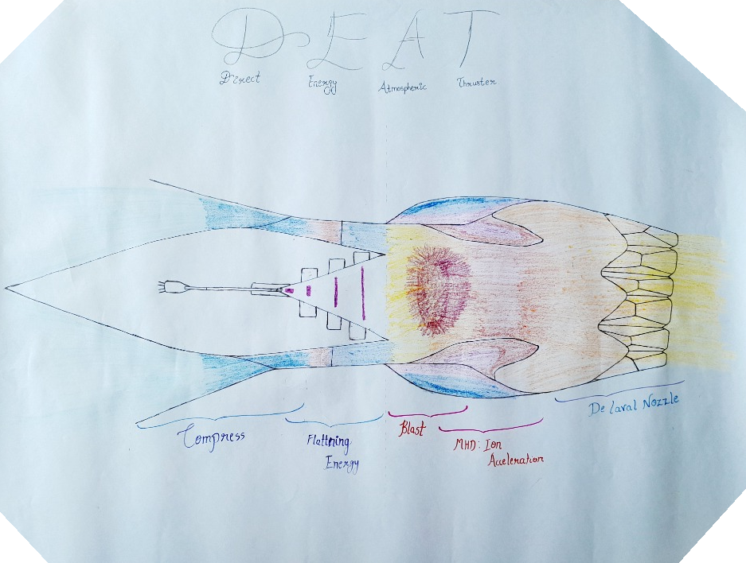

ORCID
ORCID
 GitHub
GitHub
 LinkedIn
LinkedIn
Directed-energy isochoric propulsion, high-speed rotational machinery, clean hydrogen powertrains, and closed-loop macro fuel system architectures validated through 3D Finite Volume CFD, multi-species plasma modeling, structural FEA, and thermodynamic process integration.
 Zenodo | Open Research
Zenodo | Open Research
Directed-Energy Atmospheric Thruster: Pulsed Isochoric Propulsion
- Formulated an all-electric directed-energy atmospheric propulsion architecture replacing fossil hydrocarbon combustion with pulsed electromagnetic energy deposition.
- Engineered high-\(Q\) spheroidal photonic crystal cavity coupling with evanescent wave extraction operating at pulse repetition rates up to \(22,400\text{ Hz}\).
- Modeled multi-photon nitrogen ionization driving cylindrical Sedov–Taylor blast waves, shifting the thermodynamic cycle from Brayton to the constant-volume Humphrey isochoric cycle (\(+20.8\%\) theoretical thermal efficiency gain).
- Multi-species plasma and compressible gas dynamics simulations in OpenFOAM demonstrate \(96\text{ kN}\) net cruise thrust at Mach 2.0 and \(125\text{ kN}\) sea-level takeoff thrust with zero moving mechanical parts.

Initial mechanical cross-section drafted on paper before OpenFOAM multi-species modeling: multi-shock compression intake, electromagnetic field planarization, nitrogen plasma detonation, Lorentz acceleration, and clustered expansion nozzle.
Hydro Dynamic Engine (HDE): Rim-Driven Hubless Electric Jet
Target: Distributed Electric Propulsion (DEP) for High-Altitude UAVs
- Developed an outer-rim-driven hubless electric ducted fan eliminating traditional 25–35% hub intake blockage with a 100% open central bypass conduit.
- Engineered a hybrid active-passive magnetic bearing (APMB) suspension with a 30-pole-pair Halbach rotor array driven by a slotless concentric stator.
- Validated 18,000 RPM overspeed structural integrity: Toray T1100G carbon-fiber sleeve limits peak hoop stress to 2,664 MPa, guaranteeing an aerospace \(\text{FOS} = 1.31\).
- Coupled steady-state Conjugate Heat Transfer (CHT) proving continuous stator winding hot-spots remain at 98.8°C (radial), well below the 150°C epoxy potting threshold.
- Active closed-loop axial controller stabilizes 0.25 mm startup offset in 119.56 ms and rejects 800 N gusts in 69.56 ms.
Direct-Injection Hydrogen Rotary Powertrain (H2-ICE)
660 cc Zero-Emission Wankel Powertrain with Closed-Loop Condensation
- Exploited spatial thermal segregation of the Wankel architecture to naturally eliminate intake backfiring and pre-ignition inherent to hydrogen combustion.
- Sculpted aerodynamic toroidal flank pockets forming a double-toroidal swirl vortex in OpenFOAM CFD, completing homogeneous fuel mixing within \(2.0\text{ ms}\).
- Conducted 3D structural FEA in CalculiX under peak combustion pressure (\(56.97\text{ bar}\)), confirming Yield \(\text{FOS} = 6.81\) and deflections under \(15.28\ \mu\text{m}\).
- Integrated a Ranque-Hilsch Vortex Tube with Neodymium ring magnets for paramagnetic \(O_2\) enrichment and diamagnetic \(N_2\) venting, targeting zero-NOx combustion.
- Designed closed-loop water recovery to condense exhaust steam and spray it internally, cooling apex seals without external reservoirs.
Zenodo | Open Research
A Closed-Loop Hydrogen Carrier Ecosystem: From Ocean Desalination to Vehicle Propulsion via a Recyclable Boron–Nitrogen–Carbon Liquid Fuel
- Formulated the complete end-to-end system architecture of the Ocean-to-Drive-Shaft (OTD) Pipeline: harvesting ocean water via solar-thermal desalination, powering green hydrogen electrolysis, and synthesizing a pumpable, ambient liquid fuel compatible with existing petroleum retail infrastructure.
- Synthesized a novel recyclable boron–nitrogen–carbon (B–N–C) ionic liquid carrier (MMG-GBBA) possessing a high gravimetric hydrogen capacity of \(10.27\text{ wt}\%\ H_2\), zero vapor pressure, and non-toxicity, eliminating the high thermal penalty, volatile boil-off, and safety risks of conventional LOHCs.
- Engineered an on-board catalytic dehydrogenation reactor operating at a low \(80^\circ\text{C}\) threshold, requiring only \(9.0\text{ kW}\) of thermal duty fully supplied by fuel cell waste heat (utilizing just \(3\%\) of \(300\text{ kW}\) available parasitic heat).
- Established closed-loop inland regeneration facilities and coastal hub valorization (recovering desalination minerals and marketing \(\sim 8\text{ kg } O_2/\text{kg } H_2\) as medical/industrial co-products), achieving a delivered hydrogen cost of \(\text{USD } 1.80/\text{kg } H_2\) and \(\sim 92\%\) round-trip system efficiency.